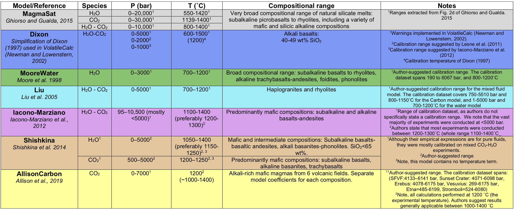
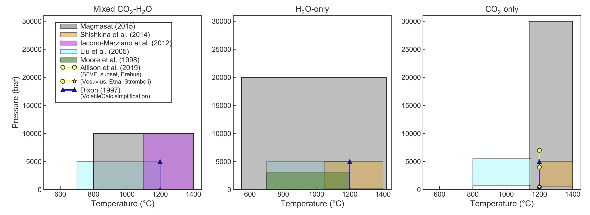

Models in VESIcal
VESIcal Recognized Models
Models included in VESIcal are:
1. MagmaSat: VESIcal’s default model. The mixed-volatile solubility model within MELTS v. 1.2.0 (Ghiorso and Gualda, 2015)
2. Dixon: The simplification of the Dixon (1997) model as implemented in VolatileCalc (Newman and Lowenstern, 2002)
DixonWater and DixonCarbon are available as pure-fluid models
3. MooreWater: (Moore et al. 1998; water only, but H2O fluid concentration can be specified)
4. Liu: (Liu et al., 2005)
LiuWater and LiuCarbon are available as pure-fluid models
5. IaconoMarziano: (Iacono-Marziano et al., 2012)
IaconoMarzianoWater and IaconoMarzianoCarbon are available as pure-fluid models
6. ShishkinaIdealMixing: (Shishkina et al., 2014) using pure-H2O and pure-CO2 models and assuming ideal mixing. In general, the pure-fluid versions of this model should be used.
ShishkinaWater and ShishkinaCarbon are available as pure-fluid models
7. AllisonCarbon: (Allison et al. 2019, carbon only). The Vesuvius calibraiton is used by default. For other AllisonCarbon model calibrations pass the argument model_loc as a string (can be one of ‘vesuvius’, ‘sunset’, ‘sfvf’, ‘erebus’, ‘etna’, or ‘stromboli’). In the manuscript, Allison et al. describe both thermodynamic and power-law fits to their data. The thermodynamic fit is used by default, but you can choose to use their power fits by passing the model_fit argument as a string (can be either ‘thermodynamic’ or ‘power’).
AllisonCarbon vesuvius (default; phonotephrite from Vesuvius, Italy)
AllisonCarbon sunset (alkali basalt from Sunset Crater, AZ, USA)
AllisonCarbon sfvf (basaltic andesite from San Francisco Volcanic Field, AZ, USA)
AllisonCarbon erebus (phonotephrite from Erebus, Antarctica)
AllisonCarbon etna (trachybasalt from Etna, Italy)
AllisonCarbon stromboli (trachybasalt from Stromboli, Italy)
A list of model names recognized by VESIcal can be retrieved by executing the command v.get_model_names(), assuming VESIcal has been imported as v. Note that the above model names are given in terms of how to call them within VESIcal (e.g., model=’MooreWater’). Allison et al. (2019) provides unique model equations for each of the six alkali-rich mafic magmas investigated in their study. The default model in VESIcal is that calibrated for Vesuvius magmas, whose calibration has the widest pressure range of the study. Setting a model name of ‘AllisonCarbon’ within VESIcal will thus result in calculations using the AllisonCarbon vesuvius model equations.
Model Calibrations
 Choosing a Model
Comparing User Data to Model Calibrations: Which Model Should I Use?
MagmaSat is the default model in VESIcal. It is the most thermodynamically robust model implemented in VESIcal, and thus it is the most generally appropriate model to use (n.b. that it is also the most computationally expensive). However, one of the strengths of VESIcal is its ability to utilize up to seven different solubility models. Each of these models is based on its own calibration dataset, meaning the pressure-temperature-composition space over which models are calibrated is quite variable from model to model. The individual model calibrations are discussed in detail in this manuscript’s companion paper (Wieser et al., in prep).
To use any VESIcal model, simply add ‘model=’ and the name of the desired model in quotes to any calculation (e.g., v.calculate_dissolved_volatiles(temperature=900, pressure=1000, model=”Dixon”)). The model argument is not neccessary to use MagmaSat, since it is the default. The model names recognized by VESIcal are: MagmaSat, ShishkinaIdealMixing, Dixon, IaconoMarziano, Liu, AllisonCarbon, and MooreWater. For more advanced use cases such as hybridizing models, pure-H2O and pure-CO2 models from within a mixed-fluid model can be used by adding ‘Water’ or ‘Carbon’ to the model name (e.g., DixonCarbon; note that MagmaSat does not have this functionality).
Determination of the appropriate model to use with any sample is crucial to the correct application of these models, and so we stress the importance of understanding how a model’s calibration space relates to the sample at hand. VESIcal includes some built-in functionality for comparing melt compositions from user loaded data to those in the datasets upon which each of the VESIcal models is calibrated using the method calib_plot. This can be visualized as a total alkalis vs silica (TAS) diagram or as any x-y plot in which x and y are oxides.
- VESIcal.calib_plot(**kwargs)[source]
Plots user data and calibration set of any or all models on any x-y plot or a total alkalis vs silica (TAS) diagram. TAS diagram boundaries provided by tasplot python module, copyright John A Stevenson.
- Parameters:
user_data (BatchFile object, Sample object, pandas DataFrame, pandas Series,) – or dict. OPTIONAL. Default value is None, in which case only the model calibration set is plotted. User provided sample data describing the oxide composition of one or more samples. Multiple samples can be passed as an BatchFile object or pandas DataFrame. A single sample can be passed as a pandas Series.
model (str or list) – OPTIONAL. Default value is ‘all’, in which case all model calibration datasets will be plotted. ‘Mixed’ can be used to plot all mixed fluid models. String of the name of the model calibration dataset to plot (e.g., ‘Shishkina’). Multiple models can be plotted by passing them as strings within a list (e.g., [‘Shishkina’, ‘Dixon’]).
plot_type (str) – OPTIONAL. Default value is ‘TAS’, which returns a total alkali vs silica (TAS) diagram. Any two oxides can be plotted as an x-y plot by setting plot_type=’xy’ and specifying x- and y-axis oxides, e.g., x=’SiO2’, y=’Al2O3’.
zoom (str or list) – OPTIONAL. Default value is None in which case axes will be set to the default of 35<x<100 wt% and 0<y<25 wt% for TAS type plots and the best values to show the data for xy type plots. Can pass “user_data” to plot the figure where the x and y axes are scaled down to zoom in and only show the region surrounding the user_data. A list of tuples may be passed to manually specify x and y limits. Pass in data as [(x_min, x_max), (y_min, y_max)]. For example, the default limits here would be passed in as [(35,100), (0,25)].
figsize (tuple) – OPTIONAL. Default value is (17,8). Sets the matplotlib.pyplot figsize value as (x_dimension, y_dimension).
legend (bool) – OPTIONAL. Default value is True. Can be set to False in which case the legend will not be displayed.
save_fig (False or str) – OPTIONAL. Default value is False, in which case the figure will not be saved. If a string is passed, the figure will be saved with the string as the filename. The string must include the file extension.
- Return type:
matplotlib object
Here is an example of the calib_plot function in action. Below we plot the calibration plot along with some data previously loaded from an ExcelFile (named myfile). You can also call calib_plot() with no arguments to generate the plot with only the calibration data shown:
calib_plot(user_data=myfile)
You can also generate an x-y plot for any oxides in the calibration database (and/or in your data). Here is an example showing our own loaded up data compared to the IaconoMarziano model database in SiO2-K2O space:
calib_plot(user_data=myfile, model='IaconoMarziano', plot_type='xy', x='SiO2', y='K2O')